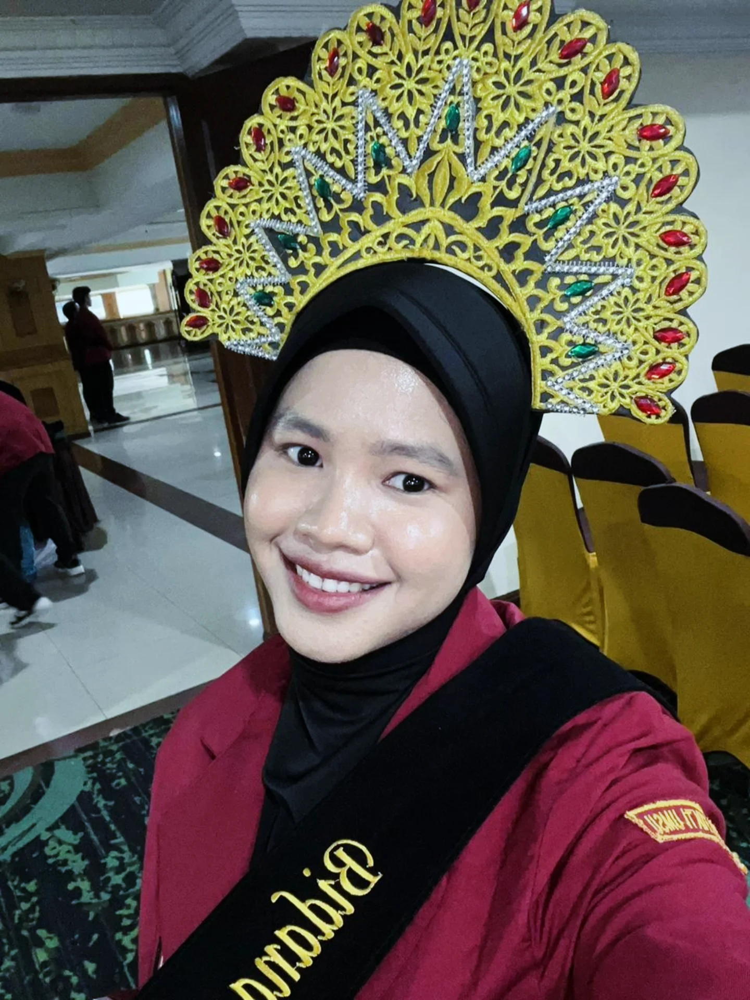

Mahasiswi Universitas Muhammadiyah Sumatera Utara (UMSU) yang aktif dalam inovasi berbasis teknologi dan pemberdayaan masyarakat. Berfokus pada sistem informasi, manajemen proyek, dan implementasi solusi digital yang adaptif.

Saat ini saya mendalami bidang sistem informasi, manajemen sistem, serta pengembangan teknologi berbasis digital. Saya aktif dalam organisasi kampus, kepanitiaan, dan project sosial berbasis inovasi.
Selama menempuh pendidikan, saya mempelajari dasar-dasar pemrograman, desain grafis, serta pengembangan perangkat lunak. Saya juga aktif dalam organisasi sekolah dan kegiatan pengembangan diri.
25 Okt 2025 – 15 Mar 2026
Terlibat dalam pengembangan dan implementasi project sosial berbasis inovasi dan teknologi.
22 Jun – 24 Jul 2024
Jl. Kh. Ahmad Dahlan 1, Desa Aras
Mengikuti pelatihan intensif tentang desain grafis menggunakan perangkat lunak CorelDraw.
24 Jan – 24 Mar 2023
Jl. Prof. H. M. Yamin No. 173, Kisaran Naga
Bertugas sebagai admin channel YouTube STMIK Royal Kisaran dan asisten laboratorium komputer.
22 – 24 Nov 2021
Jl. Teuku Cik di Tiro, Medan
Pencegahan Penyalahgunaan Narkoba bagi Siswa SMK.
Kabid Ekonomi & Kewirausahaan
2025 – SekarangKetua Ambalan
2021 – 2024K.B. Kepramukaan & Keagamaan
2021 – 2024Anggota
2018 – 2021K.B. Kebersihan
2019 – 2020Anggota
2013 – 2018Berikut adalah beberapa keterampilan utama yang saya kuasai dan kembangkan selama masa studi maupun praktik nyata.
Kegiatan yang sering saya lakukan untuk mengembangkan diri dan menyegarkan pikiran di waktu luang.